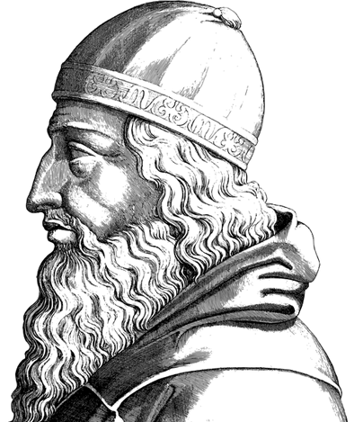
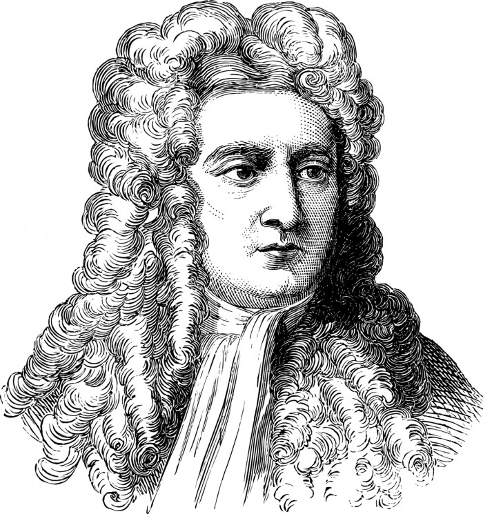

빛
"빛의 파장이 만든 결과물, 색"
색이 스펙트럼으로 알려지기 이전까지, 사람들은 색을 물질적인 원소,
혹은 신의 산유물과 같은 종교적인 의미로 해석했다. 개중엔 유명한 철학자
고대 그리스의 철학자이다.
"색은 빛과 어둠의 혼합에서
만들어진다"는 이론은
뉴턴의 등장 이전까지
신빙성있게 받아들여졌다.
의 주장도 함께했는데, 아리스토텔레스는
"색은 신이 하늘에서 보내는 신성한 빛"이라고 해석했다.
아리스토텔레스의 주장에 따라, 색은 빛과 빛의 부재에서 탄생하며
파랑과 노랑이 진정한 원색이라는 견해가 사람들 사이에서 가장 신빙성을 얻었으나,
2000년 뒤
사과가 떨어지는 모양을 보고
중력을 발견한 유명한
영국출신의 물리학자였다.
이 색에 대해 물리적으로 진실을
파헤침에 따라 과학적인 설명이 가능해졌다.
뉴턴은 색채가 물체 자체의 성질이 아닌,
물질에 반사되는 빛의 성질임을 입증한 최초의 과학자다.
혹은 신의 산유물과 같은 종교적인 의미로 해석했다. 개중엔 유명한 철학자
*아리스토텔레스

고대 그리스의 철학자이다.
"색은 빛과 어둠의 혼합에서
만들어진다"는 이론은
뉴턴의 등장 이전까지
신빙성있게 받아들여졌다.
"색은 신이 하늘에서 보내는 신성한 빛"이라고 해석했다.
아리스토텔레스의 주장에 따라, 색은 빛과 빛의 부재에서 탄생하며
파랑과 노랑이 진정한 원색이라는 견해가 사람들 사이에서 가장 신빙성을 얻었으나,
2000년 뒤
*아이작 뉴턴

사과가 떨어지는 모양을 보고
중력을 발견한 유명한
영국출신의 물리학자였다.
파헤침에 따라 과학적인 설명이 가능해졌다.
뉴턴은 색채가 물체 자체의 성질이 아닌,
물질에 반사되는 빛의 성질임을 입증한 최초의 과학자다.